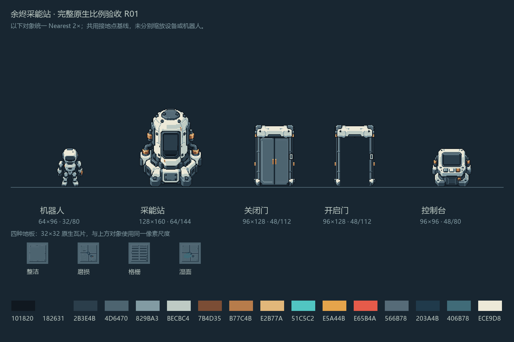

EMBER ENERGY STATION / ART SPEC 02 / 2026.10.06
设备有清楚的细节，
地面保持安静与连续。
以已确认的机器人与设备比例板建立像素语言。地板重新设计，围绕连续铺刷、共享接头和自动收口组织整套资源。
原生像素 · 蓝灰钢材 · 浅装甲 · 少量黄铜新套 32px = 32 世界单位规范示意 · 尚未制作新资源
已确认的参考范围

原始比例板 · 对象共用整数2倍展示。
沿用设备家族
浅色装甲包住蓝灰结构，黄铜用于工具接口与小型紧固件。轮廓清楚、材料分工明确，设备来自同一制造体系。
地板单独重做
用户明确不满意板中的地板。这里仅参考机器人、设备、配色与原生尺度，四块旧地板不计入认可范围。
原生比例板只确认方向；角色动画、接头和新地板仍需逐项验收。现有主游戏与128px历史资源本轮未迁移。
共享配色
材料色阶统一。状态色由灯窗、UI与Shader使用，普通地面保持低对比。
地板结构与自动补全
下图用简化色块演示邻接与收口。它不是新版地板成品，也不代表Godot已验收。选择格子后，可在右侧查看归一后的结构与图集位置。
按住拖动绘制／擦除；方向键移动选中格，空格执行当前工具，Delete擦除。网格线只表示逻辑格。
47型邻接表 · 中心始终属于当前地形
当前格同类邻居
只在相邻两条正交边都存在时计入对角。数字是规范mask，坐标由升序排列确定；不规定最终美术必须画成方形模板。
16型网络表 · N/E/S/W四个端口
孤立1、端头4、直线2、弯角4、T口4、十字1。相邻平行线路与跨越结构须另验连接关系。
交付与验收
先完成一套可刷地板
- 固定材质与所有共享截面。
- 关键中心／边／角／窄路小样。
- 6×6试铺，与机器人和站点同尺度对照。
- 补齐47型并配置Terrain。
- 验证绘制、擦除、闭环、凹洞与重载。
完整包必须能在Godot里使用
PNG + TileSet + mask／coord目录 + 可操作试铺场景 + 配套Mask + 来源与失败记录。
| 项目 | 标准 |
|---|---|
| 面积 atlas | 8×6格 · 256×192 · 47有效槽 |
| 网络 atlas | 8×2格 · 256×64 · 16有效槽 |
| 普通显示 | 32世界格 · Nearest · scale=1 |
| 认可状态 | 技术通过与视觉认可分别记录 |